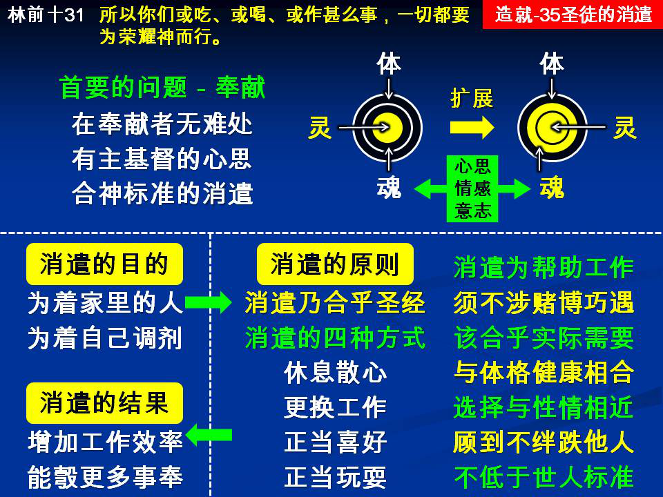

诗歌：补 201首、补801首
重要经文：
哥林多前书十章二十三节：凡事都可行，但不都有益处；凡事都可行，但不都建造人。
哥林多前书六章十二节：凡事我都可行，但不都有益处；凡事我都可行，但无论那一件，我总不受它的辖制。
哥林多前书十章三十一节：所以你们或吃、或喝、或作什么事，一切都要为荣耀神而行。
纲目要点：
壹 消遣在奉献的人身上没有难处。
贰 消遣的目的：
一 为着家里的人。
二 为着自己。
参 消遣的原则：
一 人有消遣的需要。
二 消遣的四种方式。
三 消遣是为帮助工作。
四 消遣必须没有巧遇。
五 消遣应该合乎需要。
六 消遣必须与体格相合。
七 要挑选性情所近的。
八 要顾到会不会绊倒别人。
九 外邦人所以为不可的都不可作。
肆 有一点调剂是为叫我事奉得更好。
信息选读：
消遣的目的－保守我们的家庭属乎主
在奉献的人身上消遣根本不成问题。但是，在家庭里不只有我们，还有我们的儿女，还有我们的弟弟妹妹。这些人如果也是奉献的人，也一点难处都没有。但是，许多时候，这些人可能不是奉献的人，那么我们的态度就与他们大有关系。我们应许他们有什么种的消遣，和不应许他们有什么种的消遣，是有大的关系。所以，我们提起消遣的问题，为给我们家里的人有正当的引导。你们作父母的人，对于家里的孩子，许可他们有什么种的消遣，才是合乎基督徒体统的呢？我们每一个作神儿女的人都要清楚。因为在这件事上一有漏洞，马上世界进到家庭里来了。世界一进到家庭里来，你再要想把世界从你儿女身上赶出去，就非常不容易。为要保守我们的家庭属乎主的缘故，我们就得在神面前注意消遣的问题。
人有消遣的需要
消遣是合乎圣经的，是合乎主的旨意的。我们第一要承认，人需要消遣。作基督徒的人，总不应该走极端的路。人是有消遣的需要。因为许多人事情相当忙，如果没有一点调剂，这样的人很容易生病，身体的健康很容易坍下去。所以，调剂乃是消遣的基本原因。特别是那些年轻的人，你不能一天到晚要他们读书，你必须让他们有另外方式的玩。你不能一天到晚只把一件事情给他们作，你必须给他们另外一种事情作。这是一个原则，是我们必须知道的。比方说，一个孩子在学校里读了八个钟点的书，回家来玩一玩，这一个玩不是生活，这是他的调剂。如果一天蹦跳八个钟点，那就不是调剂了。我们承认调剂的需要，若是把消遣当作生活就不可以。人在疲劳的时候，换一件事情作可以，如果一天到晚玩就不行。再比方，有的人夏天喜欢到水里去游泳，在这里我们寻不出有错。在疲劳的时候到水里游泳半点钟、一点钟，没有错。如果一个人像鸭子一样，一天到晚喜欢浸在水里，这不是消遣。我要你们看见，人如果对于消遣出问题，这不是消遣出问题，乃是生活出问题。
基督徒可以有四方面的消遣
１ 休息－基督徒最好的消遣就是休息。我今天累了，我就去歇一歇。主耶稣和门徒作工累了，就对门徒说，要到野地里去歇一歇。我们要注意，主的歇有消遣的意义在里面，所以主不是说去歇一歇，而是说到野地里去歇一歇。
２ 换工作－你本来都是坐着作事，现在你站起来作。本来都是劳心的作，现在劳力的作。你马上看见，你能够除去疲劳。你把工作更换一下，就已经有了调剂。
３ 喜好－有的弟兄，也许喜欢养一两只鸟。有的弟兄，也许喜欢种一点花。有的弟兄，也许喜欢画一两张图。这都是合法的，是在基督徒范围之内的。有的人或者喜欢一点音乐，写一点谱，弹弹琴。有的人或许喜欢写写字。
４ 玩耍－有许多的玩耍，像下棋、打球、骑马，这是正当的。所以有的时候，有的孩子多打几次乒乓，也很好。或者打篮球、打网球、骑马、下棋都可以。
消遣是为帮助工作
要知道，消遣乃是要叫我们的工作作得更好。消遣有一定的目的，不是消遣了就了了。不是我今天好打球，所以我去打它。乃是我打了一下球，我的工作能够作得好。不是我贪睡就去睡，乃是睡了一下我的工作能够作得好。不是我为着花去种花，乃是种一点花我的工作能作得好。所以，这些事必须是帮助我们的工作才可以，必须是帮助我们来事奉神才可以。有的人一天到晚都在作一件事，也许两个礼拜、三个礼拜，头脑就不行了，甚至体力也不行了。这样的时候，你宁可让这些弟兄姊妹有一点调剂。或者换一件事情作，或者弹弹琴、打打球。这样的作，不是为着别的，乃是为着恢复。完全是为着加增效率，不是为着减少效率。因为我消遣，我能够工作作得更好，我能够事奉神更多。
消遣必须没有巧遇
所有的消遣有两种，一种是技术的，一种是巧遇的。你去掷骰子，你要去碰巧，这是巧遇。一切的赌博，基督徒绝对不应该有。有的人在没有得救之前搓麻将，这是赌博。这是技术的，又加上巧遇的。基督徒只能技术的玩，不能巧遇的玩，也不能有技术也有巧遇的玩。搓麻将就是不下钱也是巧遇的，叫我自己有另外一个希望，另外一个祷告。你希望机会来帮你的忙，你的那一个希望不对，就是不赌钱都不可以。打弹子完全是技术的。打弹子就是有输赢也是对的，但是一有钱的问题就是错的，那是赌钱。任何的技术是可以的，任何的巧遇是错的。巧遇就是赌博。 有一点调剂是为叫我事奉得更好 你们要看见，生命是以时间来计算的。生命当然不只是时间，但是生命是以时间来计算的。人在神面前不能没有时间。如果你有时间，你花一个钟点去消遣，这一个钟点总得回来帮助你工作。如果没有那一个需要，就是浪费时间，浪费时间就是浪费生命。神儿女的身体不是他自己的。所以要有调剂的时候，总要记得，我作这件事到底是否与我的身体有益？有益的就作，没有益的就不作。在这里，有的姊妹有心脏病，如果你看见外头有弟兄打球，你也去打一下，就要打出事情来。打球在弟兄身上没有错，在有心脏病的姊妹身上就有错。我所有的一切都是为着事奉神；就是我今天有一点调剂，目的还是为叫我事奉得更好。我绝不盼望信主的人，年轻的时候就去世。我总是盼望在召会里有老年的弟兄，有老年的姊妹。请记得，世界上的老年人，和召会里的老年人不一样。世界上越是老年人越退化，越年纪轻越进步。但在召会里，越老年是越进步。在世界里是老的不死，新的上不来，都被他们挡住了。但在召会里不是这样，越老越新，越摸越高，越摸越深。如果召会里缺乏了年老的弟兄姊妹，召会里反而贫穷，反而失败。所以我实在不盼望在召会里，有的弟兄姊妹不顾身体而早年去世，主给他所有的学习不能变作召会的供应。召会不应该有这一个损失，召会背不起这一个损失。 （摘自初信造就第三十五篇）
课程复习：
一 为人父母者为何要为孩子有消遣的安排？
二 人为何有消遣的需要？
三 基督徒可以有哪四方面的消遣？
四 消遣有哪两种，其讲究为何？
五 请说明为什么有一点调剂是为叫我事奉得更好？
辅助图表：
